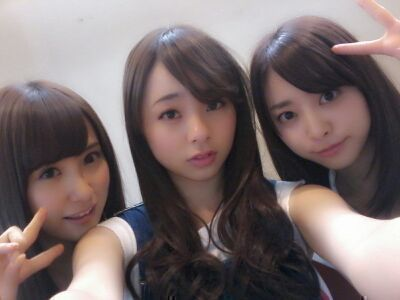

はぁぁあい♪
ろってぃ−だよん **
もう 白のタンクトップに
オーバーオールでじゅうぶん
外を歩ける気温だお〜\(・ω・)/
そして,
またまた皆様 たくさんの
コメントありがとぅねっ
嬉しい嬉しいよん.
ここ最近はずっと仕事があって
終わってから都内に出たり
してたよん(^^)
今日は,
6枚目の新制服を初めて着ました !
新制服の写真撮影などなど!
それ以外にもね...^^
そういった感じですねぇ〜♪
昨日は,
朝日新聞のお仕事でした//
まひろ さゆりん かずみ みさと
一緒にしました !
一昨日は,
のびのび乃木坂 のお仕事でした //
まひろ さゆにゃん ちはるです!
プリンシパルの頑張りを
評価してもらえたみたいで...
今回は ３人で、・・・・
うっ(>_<) 何やったかまだ
言っちゃだめなんよね?
○○しました ^^
明日は 朝なかなか
早いんだよぉーー(T-T)
... でもね、まひろね、
寝坊する自信はないから
大丈夫よぉ〜ん♪
今日、本当 久しぶり
(半年ぶり? １年ぶり?)に
ラーメン店に行きました !
この３人で ☆

↑まひろ、まばたきを我慢してたから
そのキモチが顔に出てるね 笑
みさ豚骨、まひろ担々麺、ねね味噌
やったよん(^_^)//
めっちゃオイチーオイチーわっ♪
また ラーメン食べたいと思たよ.
ではでは
明日も元気に頑張りましょ(・∨・)?
皆ちゃま おやすみなしゃい//
好きだよ−.
のし.